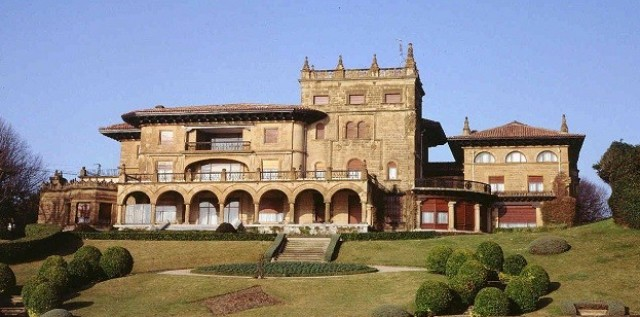
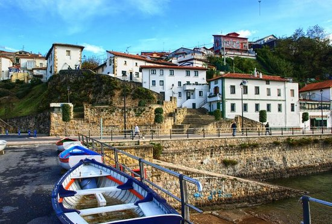
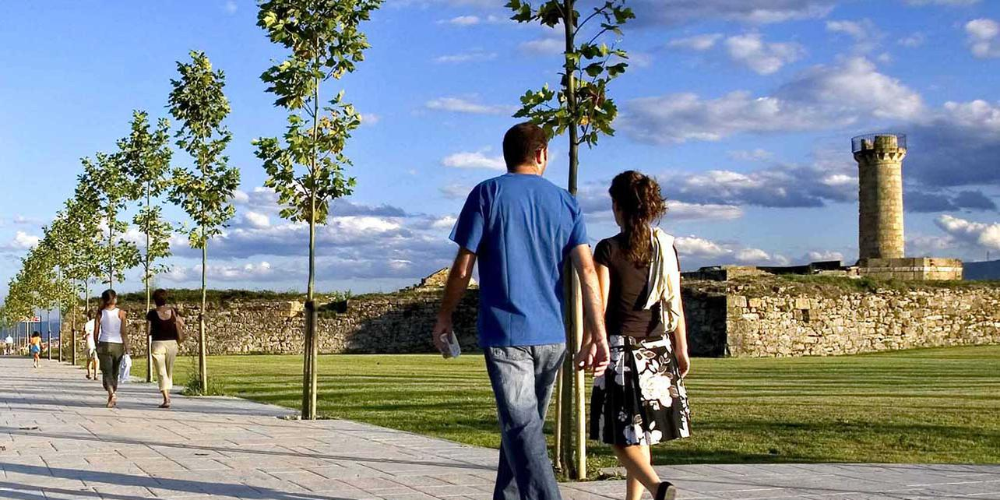
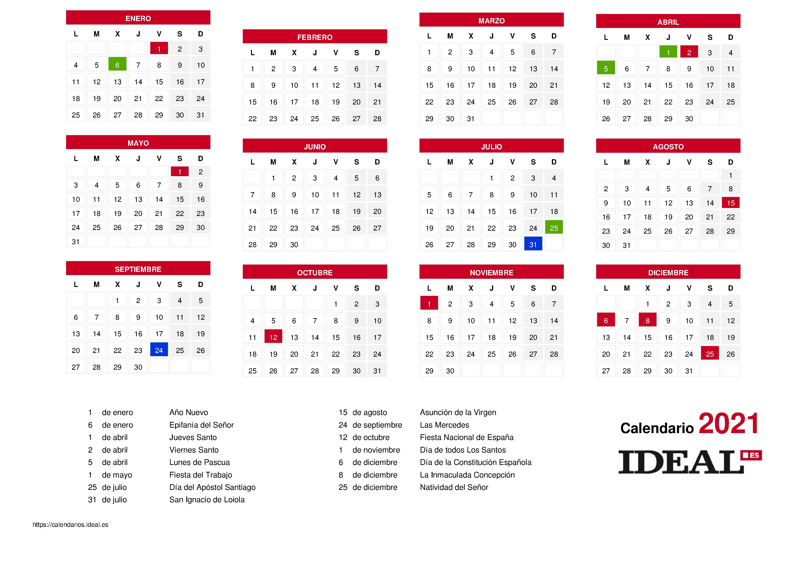

Know more about Getxo the Municipality of Bilbao
Getxo is a municipality that does not have a single center, in reality there are three urban centers. The most populated, Algorta, a small fishing village at the beginning of the XIX century, with its Old Port. Neguri, where, with industrialization, the great industrial and financial fortunes left Bilbao in search of more residential areas and settled here in their palaces and mansions. And Las Arenas, parallel to the beaches, where, imitating that exodus, the emerging wealthy classes of the sixties settle down (also in Algorta) considerably multiplying their number of inhabitants. These three towns together with the neighborhoods of Romo and Santa María de Getxo (the origin of everything) add up to 80,000 inhabitants and make up the right bank, named for being to the right of the Nervión estuary, which marks the dividing line (physical, but also economic; the other is the left bank) of the two banks joined by the Hanging Bridge. To get there from Bilbao, 14 kilometers away, the most practical option is the spectacular Norman Foster metro (Areeta stop). Along the way, it is worth stopping at Sarriko Station, completely excavated during its construction and illuminated with natural overhead light: one of the most refined spaces in all of Norman Foster's architecture.
Places to visit in Getxo
Paseo Tamarindos

The tamarind walk that runs parallel to the mouth of the estuary begins next to the small and secluded beach of Las Arenas, by the Churruca Pier.
This engineer, named Evaristo, built the port of Bilbao and the canalization of the Nervión (1904), and a monument is dedicated to him with a statue alluding to how man conquers the sea through which he crosses.
Apart from opening with the first bath, you can take a break on the terrace of the Embarcadero hotel (Avenida de Zugazarte, 51), a renovated stately farmhouse with views of the mansions and chalets of the elite Neguri on the seafront.
Palacio de Lezama
The imposing palace of Lezama-Leguizamón (1902), a family initially linked to mining, can be seen on the right over the small promontory of Arriluce, following the walk towards Ereaga beach.
Somewhat larger than the one we have just left, about a kilometer of fine sand, it is home to the El Abra marina, where you can from renting a sailboat to learning the arts of the sea at the sailing school.
Puerto Viejo
And already in flour, the route takes us straight to the Old Port of Algorta.
Its unmistakable stairs are a natural seat to sunbathe a beer, a wine or a txakoli, a broth that has gone from being the poor of the bar to being among the most valued thanks to very careful elaborations (not all are the same, the Vizcaíno is more relaxed compared to Gipuzkoan, more bubbly).
And, of course, accompany the drink with pinchos from the taverns and restaurants in sight, such as Itxas Bide (Ereaga Pier) and Arrantzale (Portu Zaharra); the Puerto Zabala steakhouse (Aretxondo), with home cooking and, as in the previous ones, fish that go directly from the sea to the oven (we are in fishermen's territory), and, quieter, the Karola Etxea (Aretxondo).
La Galea and Fuerte de Vigilancia.
After this tribute, it is time to embark on another great walk along the coast: from Arrigunaga beach, next to the port, the goal is La Galea or route of the cliffs.
You can get there by tube or bus, but if you are in conditions, it would be unforgivable not to walk those 5.6 kilometers that are often compared to the white stone cliffs of Normandy and those of Dover in England.
And you should not miss the 18th century fort to monitor commercial traffic to Bilbao, the only example of military construction that is preserved in Bizkaia, nor the Nuestra Señora del Carmen cemetery, especially for mythomaniacs, because some of the heroes of the city rest there. zone in the most majestic pantheons of Bizkaia.
Take a look at the work calendar of getxo and its parties
Work Calendar
Coming events
The different popular festivals that are celebrated in the town are one of the most anticipated events of the year for the people of Bizkaia. And is not for less. Some of the festivals that we present to you in this section have become an unmissable event for those of us who live near this coastal town. Because each neighborhood has its own parties and events, Getxo hosts more than 5 events of this type throughout the year. Among all of them, the most important: the San Ignacio festivities in Algorta (July), paellas in Aixerrota (July), the Old Port of Algorta festivities (August), the San Lorenzo Market (August), Romo festivals (August) and the Areeta festivities (September).